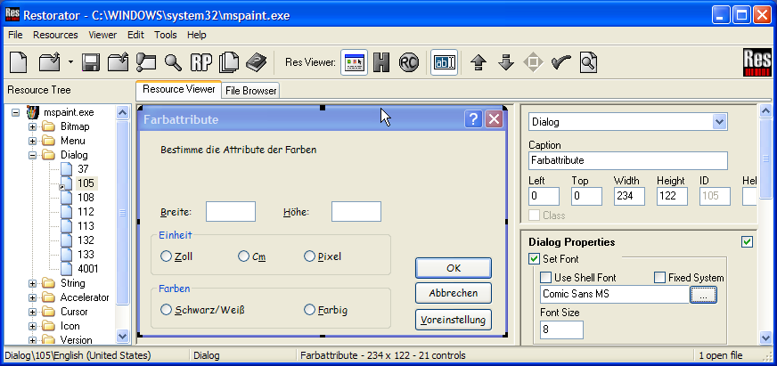

|
Help Overview Manual Tutorials FAQ Purchase Restorator Web |
Restorator
Dialog Editor Tutorial
Tutorial: Using the visual UI Recreator
Restorator comes with an integrated editor for dialog resources. It gives you full control to design and change dialogs. This tutorial shows how this is helpful when translation requires to change the size and location of strings in buttons and other elements.
Again, please respect the copyright of programs and modify it for your private use only.
1. Open a dialog
Let's use MS Paint again. To access the dialog use the Menu File->Openand choose "MSPaint.exe" in "C:\Program Files\Accessories" (Windows 95/98/ME) or in "C:\WINNT\system32" (Windows NT/2000/XP).
Select the dialog folder in
the Resource Tree and select dialog 105, then select the edit button
 (or press F6)
to see the dialog below:
(or press F6)
to see the dialog below:

Now you can select each individual element to modify its content position and properties. The position can be changed with the mouse. All options can be accessed in the options on the right.
You can change each element. To get the position perfect, use the position elements on the right and confirm with enter. The size of the buttons is changed to bring the word Voreinstellug in the Default button.

Changing the elements is required for translation but it is also used to implement design guidelines and make some fixes after compilation. You can also transform elements and change the size of windows.
To add new elements (such as static
strings) select the RC
button  and the edit button
and the edit button
 again than add another line to
create a new element. For easy modification go back to default mode
again than add another line to
create a new element. For easy modification go back to default mode
 .
.
A restorated window could look like this:

2. Saving the new dialog
Now save the file as
something else, e.g. MSPaint1.exe. Then click the Run toolbutton
 and see the difference in your new custom application !
and see the difference in your new custom application !
Copyright 1997-2007 by bome.com